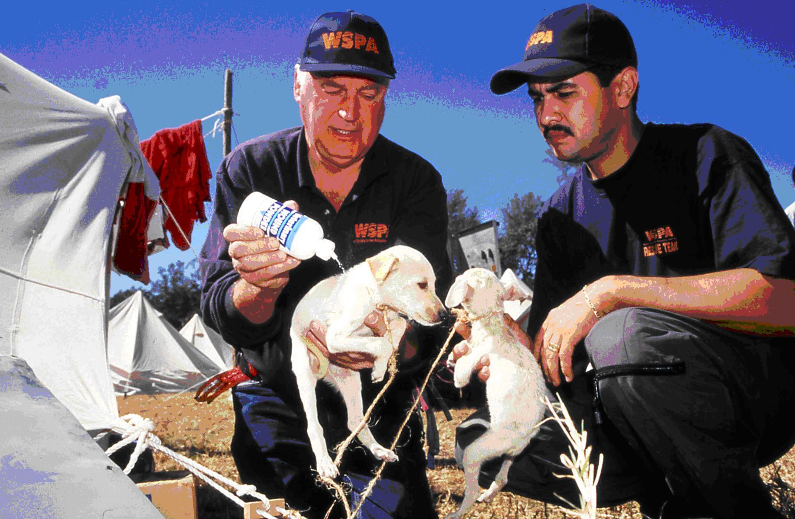

我们的行动

-
责任养宠
我们能够通过《动物福利全球宣言》推动全球的动物保护事业。犬只作为社区动物，是我们日常最容易接触到的动物。除了宠物犬和工作犬外，中国的流浪犬数量已达数千万。 流浪犬是遭到遗弃和意外走失的宠物，也包括流浪犬产生的后代。如何科学、系统、有效地解决流浪犬引发的相关问题。已成为当代中国必须面对和解决的重大社会关切。
-
福利养殖
为了满足人类对肉蛋奶类产品日益增长的需求，集约化的工业养殖已经成为全球普遍的农业生产方式。然而在追求效率的同时，农场动物的生存状况被严重忽视。其实有更好的养殖方式，在保证产能的同时，让动物免于不必要的痛苦。
-
动物友好型旅游
中国是全球旅游业发展最快的国家之一。“动物友好型旅游”既是旅游行业升级转型的必然趋势，也是中国旅游企业和广大游客在野生动物保护方面肩负的重要责任。